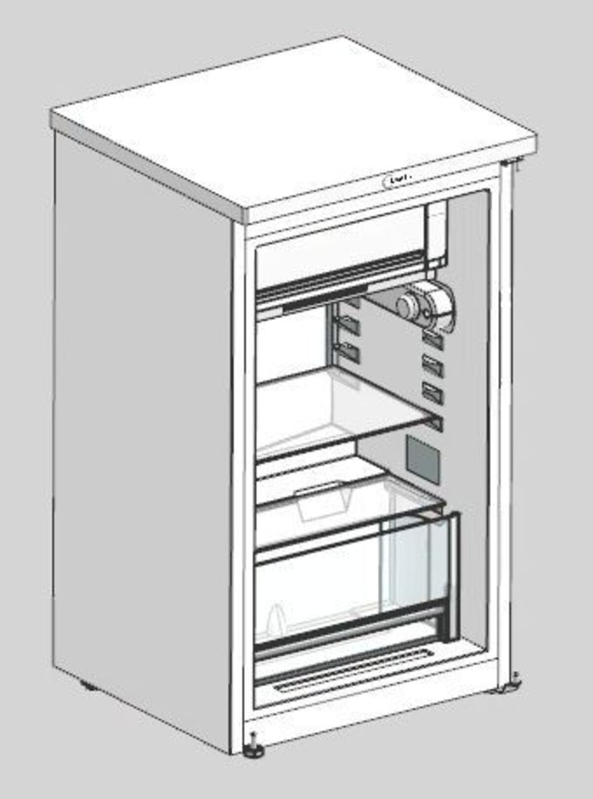
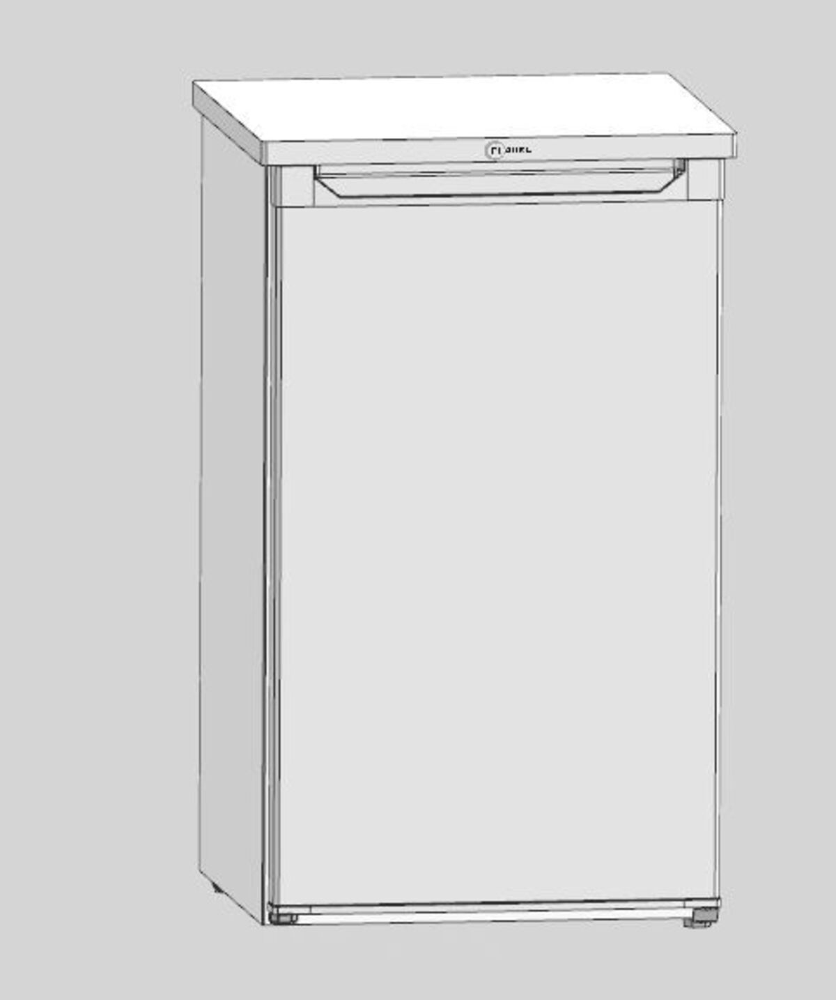
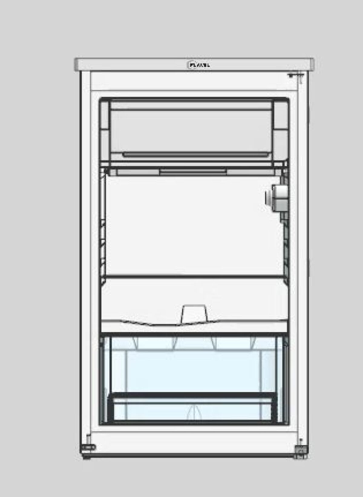
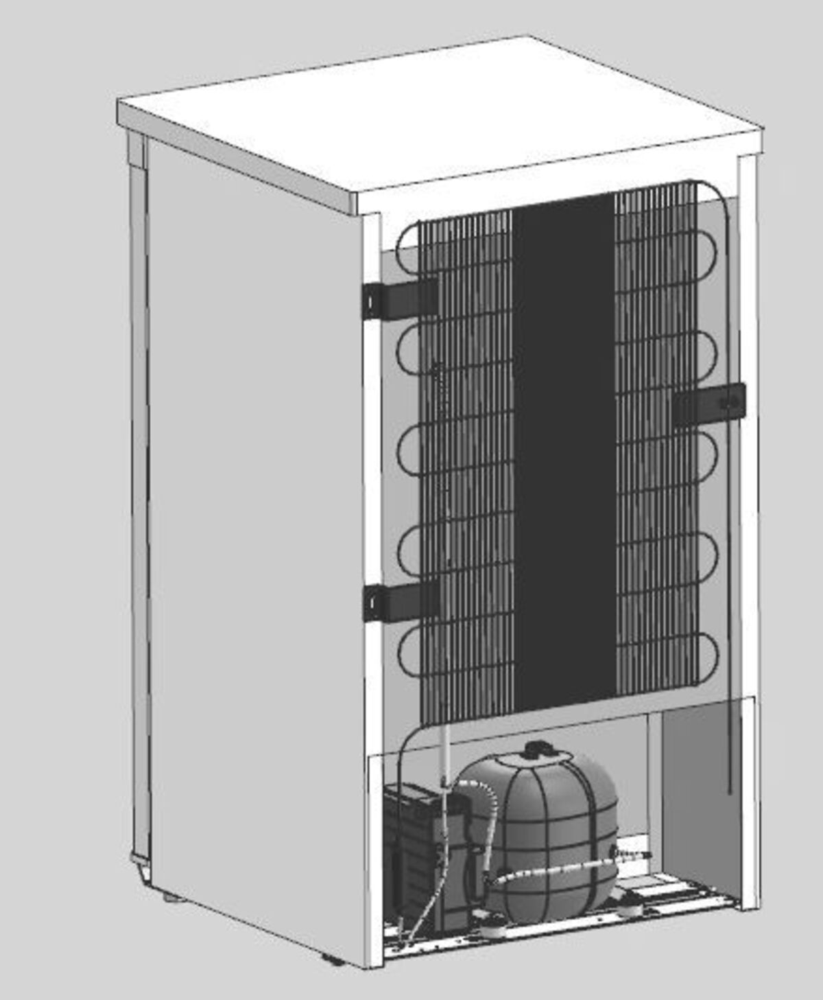
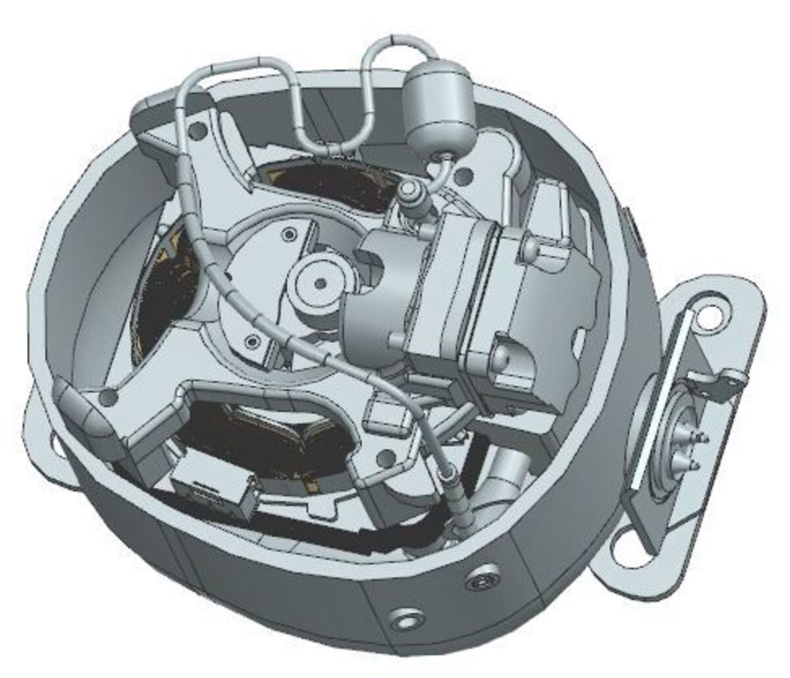
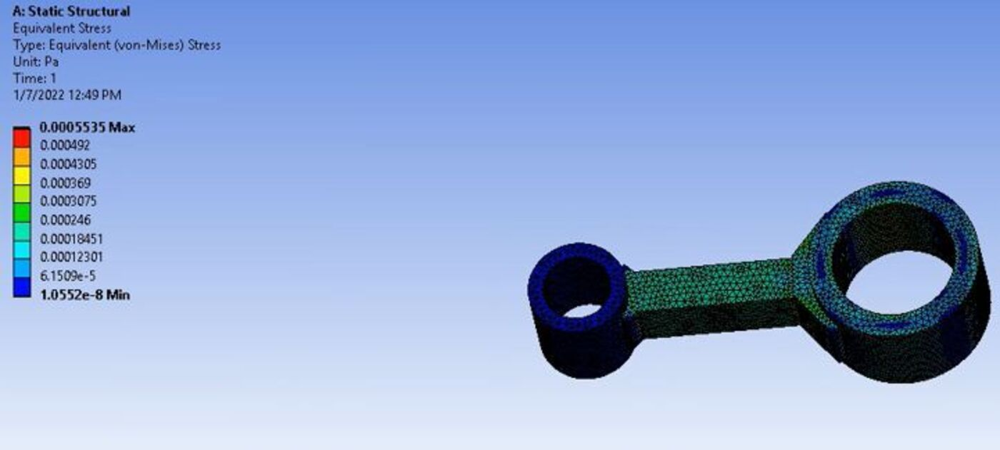

A compact refrigerator, taken apart down to its last screw, measured by hand, and rebuilt piece by piece as a full parametric CAD assembly — including a structural check on the compressor's connecting rod.

The final assembly, modeled entirely from measurements taken off the real unit.
Rather than designing a refrigerator from a spec sheet, the brief was to understand one that already exists — by taking it apart.
We bought a compact refrigerator and fully disassembled it: cabinet, door, interior shelving, evaporator coil, condenser coil, and compressor unit all came apart into individual components. Each part was measured by hand and modeled in CAD from those measurements, then reassembled digitally into a single parametric model of the whole unit.
It was slower than it sounds — some parts (the compressor housing especially) don't have simple, measurable geometry, and the assembly process surfaced a lot of small interference and tolerance issues we hadn't anticipated. Getting every part to actually fit back together in CAD the way it did in reality was most of the work.
The full assembly, modeled from the outer cabinet down to the refrigeration components hidden behind it.




The compressor's connecting rod links the motor's rotating crank to the piston, so it carries the full operating load on every cycle — a reasonable candidate for a quick structural sanity check.
We modeled the rod from the measured compressor geometry and ran a static structural analysis to see how it handled that load. The resulting equivalent (von Mises) stress stayed well below the material's yield strength across the rod, with the highest stress concentrated — as expected — around the small end where it meets the piston pin.

It was an exhausting but genuinely instructive couple of months — especially the reassembly stage, where more than a few parts didn't fit back together the way we expected on the first (or second) try. Getting there was very much a team effort, and I'm glad to have worked through it with the friends who put just as much into it.